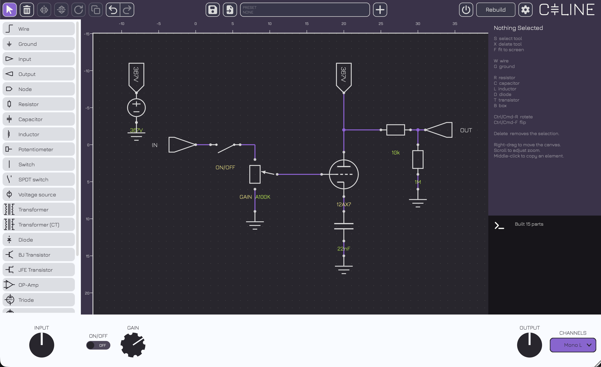

Ground
The ground is a reference point in the electrical circuit from which voltages are measured. It is required by every circuit Every circuit needs one, and the build will fail without one.
Céline (Circuit Emulation Layer for Integrated Nonlinear Equation Solving) is an open-source audio plugin for building and emulating circuits in real time.
Most amp and pedal emulation plugins are a fixed signal chain with fixed controls. Céline breaks that limit and gives unlimited flexibility.
Céline lets you design circuits from the ground up. The engine is based on SPICE, it builds a netlist from the drawn schematic and solves it. It is realtime component-level modelling, aiming to recreate with fidelity how the real circuit would behave.
It runs with no added latency and rebuilds instantly, allowing for uninterrupted playing while the circuit is still being worked on.
Drag parts from the palette, wire them together, type in the corresponding parameters.
Once satisfied with the circuit, the rebuild button sends the schematic to the engine. If the netlist can't compile, corresponding build errors will appear in the console.
Every potentiometer and switch in the circuit becomes accessible from the lower panel and is an automatable parameter in the host. These components dynamically adjust the circuit, live and without interruption.

Everything Céline can put on a sheet, and what each one does once the engine has it.
The fixed points of a sheet: where the signal comes in, where it leaves, and where it can be looked at on the way through.
The ground is a reference point in the electrical circuit from which voltages are measured. It is required by every circuit Every circuit needs one, and the build will fail without one.
This node is the entry-point of the circuit. It acts as an ideal voltage source with reference to ground and is needed for the circuit to run.
This is a perfect probe that measures the voltage of the node it's connected to.
The output terminal also has an IR loader. An impulse response can be imported here and can be switched on and off.
Nodes carrying the same label are the same electrical point. This allows to have cleaner wiring overall and connect multiple parts of the circuit easily without having to run long wires.
The scope is a perfect probe that measures the voltage potential difference between its two terminals. It acts as an oscilloscope and the editor has a limit of 8 scopes per circuit.
Each probe has its own time window and vertical scale which can be modified. Auto-scaling is on by default and the time window is set at 20ms.
Resistance, capacitance, inductance and coupling — the linear backbone every stage is built around.
Ideal classic resistor element that is used in every circuit. Fully linear.
Standard Polarised
Ideal capacitor, the circuit emulates them by integrating with the trapezoidal rule at the sample period.
A reverse-biased electrolytic is reported, not simulated: the builder flags it as an error in the console rather than quietly modelling a part that would be failing on the bench.
Ideal capacitor, the circuit emulates them by integrating with the trapezoidal rule at the sample period.
Standard Centre-tapped
The Ideal transformer models the turns ratio and nothing else: no bandwidth limit, no losses, and it passes DC.
The Real transformer has magnetising inductance, leakage and winding resistance, all four numbers derived from the turns ratio against an assumed 8 Ω secondary. These simulations are tailored after guitar-specific transformers and emulate the overall functionality without being overly faithful to a particular model.
Neither model emulates core saturation and stays perfectly linear (this is a current weakness of the modelling).
There is also a centre-tapped version, useful for push-pull output stages.
The parts you can move while the circuit runs, and the supply that feeds it.
A perfect potentiometer. It has three tapers : linear, logarithmic and reverse logarithmic. Every pot you draw becomes a control in the strip and a parameter the host can automate.
They can be tweaked live, just like a real amplifier, with the knobs contained in the lower strip at the bottom of the plugin.
Two potentiometers with the same label will become ganged. Each potentiometers keeps its own resistance and its own taper, only the shaft is shared. The wiper is drawn on the sheet live, making it easy to see the impact it has on the circuit.
It is perfectly modelled : no wiper resistance and no taper tolerance.
Switches function in the same fashion as the potentiometers. It is implemented as a resistor that changes value (it is not a true break in the circuit). It has the same naming convention : two switches with the same name will be shared and ganged together.
The voltage source is ideal, it fixes a voltage and lets the circuit decide over the current. Supply sag is modelled.
Solid-state devices, from a single junction up to an op-amp assembled out of smaller parts.
Signal Zener Schottky LED
All of the modelled diodes share the same p-n junction maths. It is an exponential I-V curve with maths inspired bt SPICE.
No junction capacitance and no reverse recovery. This is negligible at audio-rate clipping but slightly wrong in a power supply rectifier.
NPN PNP
The Early effect and the junction capacitances are modelled for the parts where these values were available. These settings can be disabled in the settings (and they will slightly lower the CPU load).
Transit time is not modelled : fT does not degrade with current.
N-channel P-channel
JFE transistors. The square law is a simple one. There are no capacitances, no Miller like the BJTs.
Each Op-amp in the editor is assembled from a resistor, two controlled sources, a capacitor and two diodes. The gain stays linear and only the clamp reaches the nonlinear solve. This is a limitation that makes the op-amp affordable for realtime rendering.
What is modelled : finite open-loop gain, one dominant pole, and the rails it clips against. What is not: slew limiting, input bias and offset current, CMRR, PSRR and the higher-order poles a real part has.
Every valve in the editor is fitted to a manufacturer's datasheet, and reproduces the quoted operating point.
Every valve implemented to the editor is fitted to a manufacturer's datasheet. It reproduces plate current, transconductance and plate resistance at the quoted operating point in the datasheet.
There are two modelling techniques used by the engine, Koren and D-Z. Koren is the classic formulation and fits published curves. It is the work of Norman Koren and the engine uses the equations he derived. Dempwolf–Zölzer is fitted to analysis and measurements of three individual 12AX7s from a published paper by Dempwolf and Zölzer.
Interelectrode capacitance is an enhancement that tries to make valve emulation closer to reality. It is slightly expensive, can cause problems at time, and can be disabled if it causes problems or to save CPU.
The pentodes use Koren's equations. The suppressor grid is permanently connected to the cathode.
There are two limitations to their emulation : Screen current does not depend on plate voltage: in a real valve, when the plate collapses into clipping the screen takes the current the plate stops taking, and here it carries on regardless. There are no secondary emission, the kink in the plate curves at low plate voltage where electrons flow backwards.
This model is pure 3/2-power space-charge flow, fitted to real datasheets.
VST3 · AU · CLAP · Standalone
DownloadVST3 · CLAP · Standalone
DownloadLV2 · VST3 · CLAP · Standalone
DownloadGatekeeper on macOS and SmartScreen on Windows will warn you. On macOS, right-click the plugin or app and choose Open the first time; on Windows, choose More info → Run anyway. If you would rather not take that on trust, the source is right there — build it yourself.
The engine can produce extremely loud output. A circuit with a wrong value in it is not a quiet mistake, and there is no limiter between you and it. Take care when designing and testing, for the sake of your equipment and your hearing.
Provided as-is, with no warranty.
Céline is free open-source software built on JUCE under JUCE's own free licence, and inherits its terms. Céline is therefore released under the AGPLv3 license.
Using Céline costs nothing and obliges nothing. The licence governs the distribution of the software, not what you make with it.
The same summary is in the plugin itself, under Settings → About.
VST® and ASIO® are registered trademarks of Steinberg Media Technologies GmbH. ASIO Interface Technology by Steinberg Media Technologies GmbH.